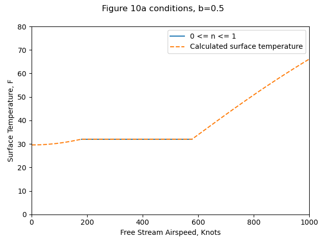
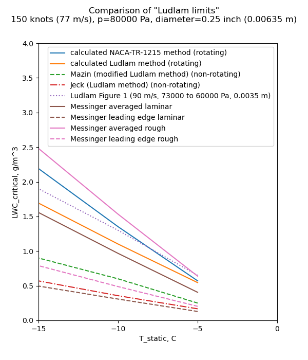

""freezing-fraction" denotes the proportion of the impinging liquid which freezes in the impingement region"
B. L. Messinger, "Equilibrium Temperature of an Unheated Icing Surface as a Function of Airspeed" 1

Modes of energy transfer for an unheated airfoil in icing conditions.
Summary
The term "freezing fraction" is defined
Key points
- Heat balance equations for a wet surface are presented.
- The term "freezing fraction" is defined
- Example calculations are provided
- Icing wind tunnel test data is provided
Abstract
The thermal analysis of a heated surface in icing conditions has been extensively treated in the literature. Except for the work of Tribus, however, little has been done on the analysis of an unheated icing surface. This latter analysis is significant in the design of cyclic thermal deicing systems that are attractive for small high-speed aircraft for which thermal anti-icing requirements have become severe. In this paper, a complete analysis of the temperature of an unheated surface in icing conditions is presented for the several significant regimes (i.e., less than 32°F, at 32°F, and above 32°F.) as a function of air speed, altitude, ambient temperature, and liquid water content. The results are presented in graphical form and permit the rapid determination of surface temperature for a wide range of variables. Curves are presented to determine the speeds beyond which no ice accretion will occur. Curves are also presented to indicate the surface temperature and the rate of ice sublimation which takes place when an ice-covered surface emerges into clear air. One significant result of this study is the introduction of a new basic variable referred to as the "freezing-fraction," which denotes the proportion of the impinging liquid which freezes in the impingement region. The fact that some of the liquid does not freeze in the impingement region tends to explain the observed variation in ice formation shape with temperature, speed, and water catch. New test data obtained at Mt. Washington, N.H., for stagnation-point surface temperatures of an unheated plastic cylinder in natural and artificial icing conditions are included in the Appendix. These data substantiate the validity of the assumptions made in the theoretical analysis.
Discussion
This paper is one of the most cited aircraft icing publication in the literature and merits close study.
I am reviewing publications in the Thermodynamics thread in order of publication. I am counting this as published in 1951, as some NACA publications (such as NACA-TN-2861) cite a pre-print of this publication. The journal publication was in 1953.
In a footnote, Messinger credits for the term "freezing fraction":
The author is indebted to M. M. Friedlander for assistance in preparation of the curves and to P. J. Valentine for suggestions relative to the "freezing fraction" concept. Both are members of the Thermodynamics Group at Lockheed Aircraft Corporation.
Symbols
The paper used its own nomenclature. I will attempt to standardize (mostly) to the nomenclature of "Manual of Scaling Methods" 2.
| Description | symbol | Messinger symbol |
|---|---|---|
| air specific heat at constant pressure | cp | ca |
| unit system gravitation factor | gc = 1 kg-m/(N-s^2) | g, "gravitational constant, 32.2 ft./sec.^2 or lbs. per slug" |
| heat transfer coefficient | hc | f |
| ambient static pressure | p | B, ambient absolute pressure |
| mass flux rate of water (mass/unit_area/time) | mw | Rw |
| mass flux rate of evaporation (mass/unit_area/time) | me | Rwe |
| evaporation fraction | m | m |
| freezing fraction | n | n |
| ambient water vapor pressure | pv | p∞ |
| surface water vapor pressure | pvs | psw |
| heat transfer (loss) by convection | qc | qc |
| heat transfer (loss) by evaporation | qe | qe |
| heat transfer (gain) by freezing | qf | qf |
| heat transfer (gain) by kinetic heating from drops | qk | qk |
| heat transfer (gain) by viscous heating | qv | qv |
| heat transfer (loss) by warming drops | qw | qw |
| recovery factor | r | r |
| ambient air static temperature | ta | t∞ |
| surface temperature | ts | tse |
| latent heat of evaporation | Le | Le |
| latent heat of freezing | Lf | Lf |
| free stream airspeed | u | V |
Calculations here will be in SI units, with the exceptions of:
- LWC, g/m^3
- drop diameter, micrometer
Heat balance for a surface at 32F (0C)
A heat balance is detailed for a wet surface at 32F.
Several heat transfer components are defined.
qc = hc * (ts - ta)
qe = 2.9 * Le * fc * (psw - p∞) / B [Messinger nomenclature]
In a footnote, Messinger says of the value 2.9 in qe equation:
The constant 2.90 is an empirical factor relating mass transfer to convection heat transfer. In reference 1 this constant appears erroneously as being equal to 2.29 because of a numerical error in the derivation. Also, to be completely accurate, the values of Pm and B should be replaced by their corresponding local values just outside the boundary layer. Thus the areas of low static pressure promote increased evaporation and high static pressure areas suppress evaporation. The magnitude of this effect is considered negligible in this paper.
NACA-TR-831 3 discusses the related ratio kw/kh:
Coefficient of evaporation.—There is some uncertainty as to the correct value of the ratio of kw. to kh, owing to uncertainty in the value of the coefficient of diffusion of water vapor in air. When the flow is laminar
When the flow is turbulent, the ratio is more nearly unity; the value may be found by substitution in Karman's equation (reference 7). Taylor's number Tr is the ratio of the diffusivity of momentum to that of any substance or heat. Prandtl's number Pr is Taylor's number in the particular case of heat, when the diffusivity is k/(ρ)'cp. Values for the diffusivity of water vapor in air are few and scattered. The most reliable is considered to be 0.22 centimeter squared per second at 0°C. (reference 8). With this value, equation (10) gives kw/kh =1.12.


The ratio (Pr/Tr)**(2/3) is fairly constant over the range of conditions of interest, so it is often in post-NACA literature taken as the constant value 1.12.
To get Messingers value of 2.9:
ratio of molecular masses, water to air = 0.622
cp_air = 0.24 BTU/lbm-F
2.9 = 0.622 / 0.24 * 1.12
So, the 2.9 factor is not just empirical, it is founded in the ideal gas law and boundary layer analogies.
More generally, for any unit system:
kw = kh / cp * (Pr/Tr)**(2/3) (if using vapor concentration difference)
he = hc * 0.622 / P / cp * (Pr/Tr)**(2/3) (if using vapor pressure difference)
So,
qe = Le * hc * 0.622 / p / cp * (Pr/Tr)**(2/3) * (pvs - pv) [standard nomenclature]
qe = Le * hc * 0.622 / p / cp * 1.12 * (pvs - pv) [constant factor (Pr/Tr)**(2/3)]
qe = Le * hc * 0.7 / cp * (pvs - pv) / p [regrouped]
qw = mw * cpw * (ts - ta)
qf = Lf * n * mw
Note that all impinging water mw is considered to freeze (evaporation is not included).
qv = fc * (r * V**2 / 2 / g / J /cp) [Messinger nomenclature]
In SI units, this simplifies to:
qv = hc * (r * u**2 / 2 / cpw)
Similarly,
qk = mw * (u**2 / 2)
When ts=32F and 0 <= n <= 1
(For brevity, we will cover only this case, consult the paper for other cases such as ts<32F, ts>32F).
Equating the sum of the "gain" terms to the sum of the "loss" terms:
qf + qv + qk = qc + qe + qw
(Lf * n * mw) + (hc * (r * u**2 / 2 / cp)) + (mw * (u**2 / 2))
= (hc * (ts - ta)) + (Le * hc * 0.7 / cp * (pvs - pv) / p) + (mw * cpw * (ts - ta))
The equation may be regrouped to solve for the freezing fraction, n.
Terms are defined to aid graphical solutions.
"By introducing the dimensionless ratio b = Rw*cw/fc"
b = mw * cpw / hc
"and three new groupings of the variables—namely,"
θ'1, θ'2, θ'3
"For any given altitude θ'1 is a function only of b as shown in Fig. 5, and θ'2 can be plotted in two steps as indicated in Figs. 6 and 7,"
Unfortunately, Figure 6 is for 20,000 ft. altitude (only), and it is not clear how the reader would get solutions graphically for other altitudes.
Results
Most of the results are in the form of surface temperature "as a function of airspeed", as in Figure 10.
Although each of these plots of ts versus air speed is shown for constant values of b, it should be noted that b will vary somewhat with speed as indicated above. It has been suggested by J. P . Lewis, one of the coauthors of references 2, 6, and 9, that, since Figs. 9, 10, and 12 do not present a realistic picture of the true variation of surface temperature with air speed, it would be desirable to construct these curves for constant values of liquid water content as would be the case in actual icing flight. Unfortunately, it is only possible to construct such a plot for a given location on a given configuration of aerodynamic body. In order to illustrate the differences between the general plot using b as the independent parameter and a specific plot using liquid water content as the independent parameter, Fig. 10a has been prepared based on the stagnation region of a 3-in. diameter cylinder.
Figure 10a conditions: altitude = 10,000 ft., T= 0F.
The python implementation (file messinger.py 4) reproduces Figure 10a results well.

(Yes, 1000 knots is kind-of high, but that is the range that Messinger used.)
| Source | Ts@V=0, F | V@n=0, knots | V@n=1, knots | Ts@V=1000, F |
|---|---|---|---|---|
| Messinger Figure 10a | 28.2 | 185 | 587 | 66 |
| Calculated (Python) | 30 | 179 | 576 | 66.1 |
Figure 10b includes the variation of b with airspeed. However, it did not include the water drop catch efficiency beta values, or the heat transfer coefficients assumed for the cylinder.
So, we will use the Langmuir and Blodgett 5 relationships to get beta values.
We will use the heat transfer coefficients relationships from Ludlam 6.

The heat transfer relations result in b values that bound the Figure 10b values.
The resulting surface temperatures with either heat transfer relationship
match Figure 10b values (not shown) well.

"Datum" temperature
Messinger has comments about the "datum temperature" from NACA-ARR-5G13 7:
An examination of the above equation indicates that this parameter might be more aptly named the "dynamic wet bulb temperature" rather than "datum temperature." Since it does not include terms to account for the sensible heating of the impinging droplets or the release of the latent heat of fusion, it cannot represent the true equilibrium temperature of an unheated icing surface or even the temperature of a surface that is wetted by an above-freezing-temperature cloud.
Messinger continues:
The convection loss term is presented as
qc = fc*(ts-tok)
which would indicate that the difference between surface temperature and wet bulb temperature is the controlling potential. This is obviously contrary to the definition of the conductance.
There is more in that vein, so this marks the beginning of the end of the use of "datum" temperature.
Conclusions
At least some ice can collect on an unheated surface in normal low-temperature icing conditions at speeds up to about 600 knots (690 m.p.h.).
High rates of water catch tend to maintain an unheated icing surface at 32°F over a wide range of speeds, but, except at the high speed end, a 32°F surface temperature does not signify an ice-free surface.
Surface temperatures predicted by the "datum temperature" or "wet adiabatic" method of analysis are lower in the low-speed range and slightly higher in the high-speed range than are obtained by the methods developed in this paper.
Once an unheated surface has been allowed to collect ice, the period required to remove it by sublimation alone is long. It is of the order of 5 hours for 1/4 in. of ice at an air speed of 500 knots at 30,000 ft. and N.A.C.A. standard ambient temperature.
Many times in my career I have been asked "Won't the ice just sublimate away?" Well, yes, if you are very patient.
The air speed required to attain a 32°F ice surface temperature in clear air at 30,000 ft. and at N.A.C.A. standard temperature is about 850 knots. Beyond this speed, melting and evaporation occur.
There are few reliable experimental data available which would permit checking the accuracy of the results developed analytically in this paper. Such data, obtained in natural icing conditions, would be valuable for establishing the validity of the various foregoing assumptions (see Appendix).
We now have another "Ludam-ish limit" to add to our collection. We calc calculate what LWC "critical" value results in a freezing fraction of 1 for the 0.25 inch diameter cylinder we saw in the review of Ludlam.
The Reynolds is too low to be turbulent for a smooth surface, but we will consider the rough surface correlation from NACA-TR-1215 8. We will also consider just the stagnation point, as Messinger did, and also an "averaged" value, spreading out the impingement over the entire surface of the cylinder.

As Messinger wrote:
"... data, obtained in natural icing conditions, would be valuable
for establishing the validity of the various foregoing assumptions"
Appendix
Messinger added an appendix with test data.
One phase of this test program included a series of surface temperature measurements on an unheated Lucite cylinder, which had a 3.75-in. outside diameter and a 1/8-in. wall thickness and was approximately 12 in. long. Surface thermocouple readings were obtained at the forward stagnation point, as well as at the 100° and 180° positions. The principal purpose of recording these cylinder temperatures was to obtain experimental data with which to check the validity of the theoretical analysis presented in the subject paper.
The test facility used for this investigation consisted of a duct attached to the inlet of a radial-flow jet engine. This duct, having a cross-sectional area of approximately 3 sq.ft., acted as a small icing wind tunnel by induction of the ambient icing cloud conditions that prevail at the top of Mt. Washington during the winter months of the year. By this means, the natural icing conditions which flow over the mountain top at velocities ranging from about 30 to 90 m.p.h. are accelerated in this tunnel to about 250 m.p.h.
The python program "messinger.py" was used to predict the stagnation-line surface temperature and freezing fraction "n". The external heat transfer relationship used was:
nu = 0.24 * reynolds ** 0.6
Calculated values agree well with the Messinger Table 1 values, especially considering that we had to infer the water catch efficiency and heat transfer coefficients.
| Run | Airspeed, mph | LWC | Water drop diameter, micrometer | T_static, F | Messinger calculated n | Python calculated n | Measured T_surface, F | Calculated T_surface, F |
|---|---|---|---|---|---|---|---|---|
| 1 | 244 | 0.64 | 6.8 | 3.8 | 1 | 1.00 | 31 | 31.4 |
| 2-A | 252 | 0.7 | 9.7 | 1.8 | 0.65 | 0.67 | 34 | 32.0 |
| 2-B | 252 | 2 | 7.6 | 1.8 | 0.402 | 0.42 | 31 | 32.0 |
| 2-C | 252 | 0.26 | 10.5 | 1.8 | 1 | 1.00 | 27 | 26.5 |
| 3 | 235 | 1.1 | 8.5 | 6.9 | 0.46 | 0.49 | 33 | 32.0 |
| 4 | 226 | 0.32 | 12 | -0.9 | 1 | 1.00 | 25 | 27.3 |
| 5 | 227 | 0.27 | 20.7 | 1.7 | 0.9 | 0.89 | 30 | 32.0 |
| 6-A | 221 | 0.27 | 9.8 | 2.9 | 1 | 1.00 | 22 | 24.1 |
| 6-B | 207 | 0.27 | 10 | 3.8 | 1 | 1.00 | 21 | 23.8 |
| 7 | 220 | 0.5 | 18.2 | 4.6 | 0.535 | 0.57 | 32 | 32.0 |
| 8 | 210 | 0.81 | 17.1 | 14.8 | 0.237 | 0.27 | 33 | 32.0 |
| 9 | 238 | 0.7 | 16.4 | 8.8 | 0.35 | 0.38 | 33 | 32.0 |
| 10 | 234 | 0.16 | 13.8 | 0.2 | 1 | 1.00 | 20 | 21.0 |
| 11 | 228 | 0.43 | 13.2 | 17.2 | 0.282 | 0.38 | 31 | 32.0 |
| 12-A | 243 | 0.17 | 8.9 | -1.6 | 1 | 1.00 | 16 | 16.0 |
| 12-B | 243 | 0.145 | 10 | -2.9 | 1 | 1.00 | 18 | 14.7 |
| 13 | 238 | 0.34 | 13 | 4.5 | 0.83 | 0.88 | 31 | 32.0 |
| 14 | 232 | 0.34 | 16 | 12.3 | 0.475 | 0.54 | 32 | 32.0 |
Ludlam wrote "These data substantiate the validity of the assumptions made in the theoretical analysis." The data substantiate the surface temperatures calculated, but the freezing fractions were not measured. We will have to look at data from the post-NACA era for freezing fraction measurements.
Citations
Messinger cites 9 publications:
- Tribus, Myron: Intermittent Heating for Protection In Aircraft Icing. (Thesis submitted in partial satisfaction of requirements for Ph.D. degree in engineering.) Univ. of Calif., Dept. of Engr., 1949.
- Lewis, James P., and Bowden, Dean T.: Preliminary Investigation of Cyclic De-Icing of an Airfoil Using an External Electric Heater. NACA-RM-E51J30, 1952.
- Hardy, J. K.: An Analysis of the Dissipation of Heat in Conditions of Icing from a Section of the Wing of the C-46 Airplane. NACA-TR-831, 1945. (Formerly NACA-ARR-4I11a.)
- Hardy, J. K.: Kinetic Temperature of Wet Surfaces A Method of Calculating the Amount of Alcohol Required to Prevent Ice, and the Derivation of the Psychrometric Equation. NACA-ARR-5G13, 1945
- Hardy, J. K.: Protection of Aircraft Against Ice. Rep. No. S.M.E. 3380, British R.A.E., July 1946.
- Hacker, Paul T., Dorsch, Robert G., Gelder, Thomas F., Lewis, James P., Chandler, H. C., Jr., and Koutz, Stanley L.: Ice Protection for Turbojet Transport Airplane. S.M.F. Fund Paper No. FF-1, Presented at I.A.S. Fifth Annual Flight Propulsion Meeting, March 24, 1950.
- Lewis, William: Meteorological Factors in the Design and Operation of Thermal Ice Protection Equipment for High Speed, High Altitude Transport Airplanes. Part 7 of a Compilation of the Paper Presented at NACA "Conference on Some Problems of Aircraft Operation", October 9 and 10, 1950.
- Neel, Carr B., Jr., Bergrun, Norman R., Jukoff, David, and Schlaff, Bernard A.: The Calculation of the Heat Required for Wing Thermal Ice Prevention in Specified Icing Conditions. NACA-TN-1472, 1947.
- Gelder, Thomas F., and Lewis, James P.: Comparison of Heat Transfer from Airfoil in Natural and Simulated Icing Conditions. NACA-TN-2480, 1951.
Messinger is cited, surprisingly, only once by publications in the NACA Icing Publications Database 9:
- Callaghan, Edmund E., and Serafini, John S.: Analytical Investigation of Icing Limit for Diamond Shaped Airfoil in Transonic and Supersonic Flow. NACA-TN-2861, 1953.
The single citation is surprising, as this paper is a close second to Langmuir and Blodgett 5 for the most cited aircraft icing publication in the literature with 740 citations 10 (the positions change from time to time, as either paper is often cited by new publications).
Related
Messinger made a presentation at the 1969 Aircraft Ice Protection Symposium.
Messinger taught a session in the University of Michigan Airplane Icing Information Course 11 in 1953.
It is only available in print (I was able to read a copy through inter-library loan).
Notes:
-
Messinger, B. L.: Equilibrium Temperature of an Unheated Icing Surface as a Function of Airspeed. Preprint No. 342, Presented at I.A.S. Meeting, June 27-28, 1951. ↩
-
Anderson, David N.: Manual of Scaling Methods. NASA/CR-2004-212875, March 2004. ntrs.nasa.gov ↩
-
Hardy, J. K.: An Analysis of the Dissipation of Heat in Conditions of Icing from a Section of the Wing of the C-46 Airplane. NACA-TR-831, 1945. (Formerly NACA-ARR-4I11a.) ↩
-
Langmuir, Irving, and Blodgett, Katherine B.: A Mathematical Investigation of Water Droplet Trajectories. Tech. Rep. No. 5418, Air Materiel Command, AAF, Feb. 19, 1946. (Contract No. W-33-038-ac-9151 with General Electric Co.) ↩↩
-
Ludlam, F. H.: The Heat Economy of a Rimed Cylinder. Quart. Jour. Roy. Meteorological Soc., vol. 77, no.334., Oct. 1951. ↩
-
Hardy, J. K.: Kinetic Temperature of Wet Surfaces A Method of Calculating the Amount of Alcohol Required to Prevent Ice, and the Derivation of the Psychrometric Equation. NACA-ARR-5G13, 1945 ↩
-
Brun, Rinaldo J., Lewis, William, Perkins, Porter J., and Serafini, John S.: Impingement of Cloud Droplets and Procedure for Measuring Liquid-Water Content and Droplet Sizes in Supercooled Clouds by Rotating Multicylinder Method. NACA-TR-1215, 1955. (Supersedes NACA TN’s 2903, 2904, and NACA-RM-E53D23) ↩
-
University of Michigan. College of Engineering: Airplane icing information course. Lectures presented in a special program at the University of Michigan, Ann Arbor, March 30-April 3, 1953. search.lib.umich.edu ↩